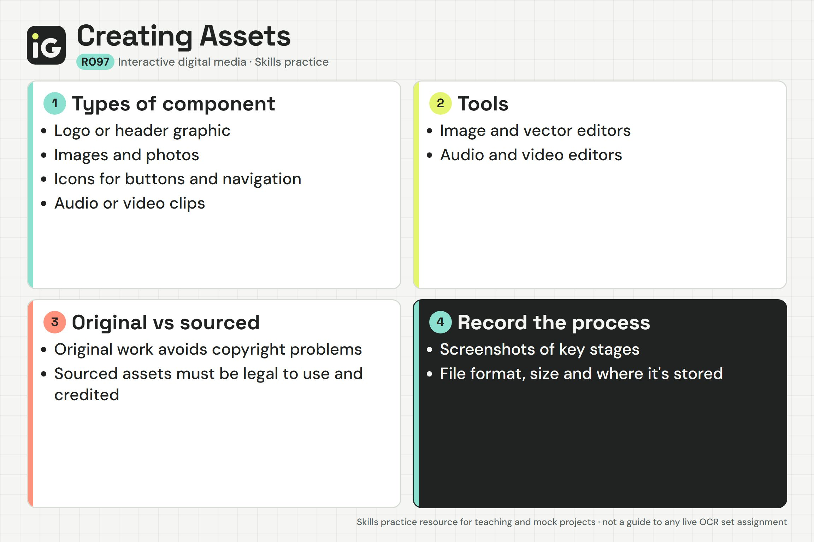

Static images
- Vector for icons and logos
- Bitmap for photos

Source/create the media assets that will become components.
Use this checklist to make sure you can cover every part of this topic.

Creating your own assets avoids licence problems and lets you match the house style exactly.